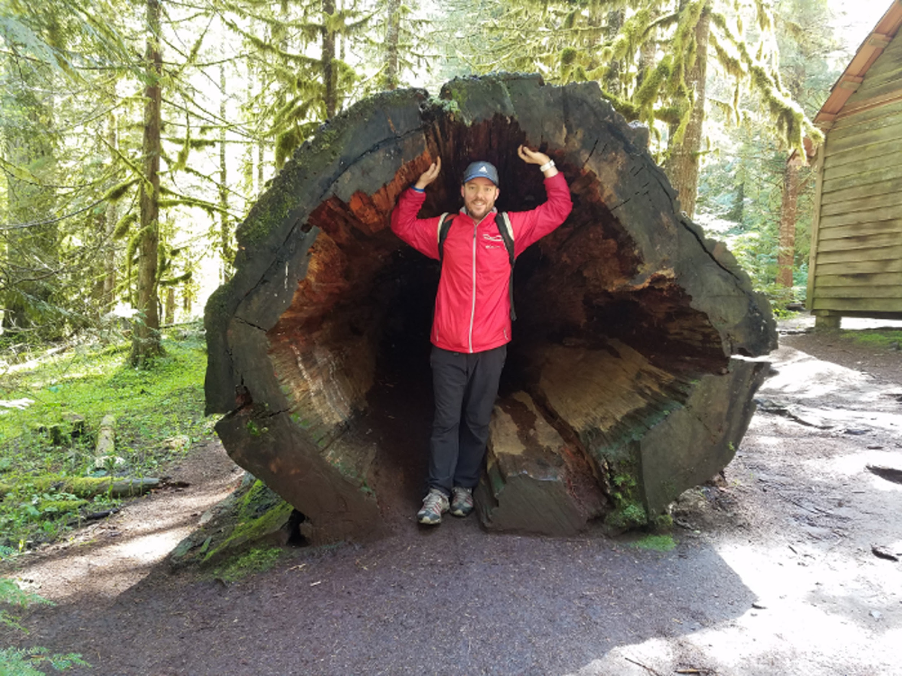

Danny Hill

Here are some projects I have been working on at Epicodus:
- Animal Shelter I created this html site to help pets find a home.
- Fido An html site created to provide care instructions for Fido.
- Mockwiki A project using html created to mimic the homepage for Wikipedia.
About me:
Personal

I am originally from Little Rock, AR. In 2002 my best friend and I decided to move to Portland to finish college and experience the north west. My orijinal plan was to live in Portland for a few years then move back. However, I quickly fell in love with the city and decided to stay for good!
In my free time I enjoy being outdoors, playing disc golf, traveling, camping, backpacking, and trying many different beers and wine offered in our beautiful city. In addition to these interest, I am also an avid music lover and you can usually find me at one of Portland's many music venues on a Friday or Saturday evening.